AI PRODUCT DAILY / 2026-11-06
Edits接上代理剪辑，Aina把确认放到戒指上
AI PRODUCT DAILY / 2026-11-06截止 03:58:34 Toronto / 08:58:34 UTC
创作能接着改，设备给出具体反馈
AI PRODUCT DAILY / 2026-11-06产品更新／产品负责人采访与发布报道 · 2026-11-05T15:00:00Z · 窗口内观察
Edits在Mac上让代理先做粗剪，创作者再回时间线改镜头
Edits Mac版公开报道配图；未进行本刊实际剪辑测试 ↗ 原始图证Edits的Mac版面向素材和轨道已经挤满手机屏幕的创作者，免费提供桌面剪辑及MCP入口。
用户启用连接，让兼容代理读取素材、做粗剪，再打开同一桌面工程手动修节奏、音频和画面。
多轨、关键帧、波形与快捷键让精细操作更方便，也能直接发布Instagram或导出无水印4K视频。
目前仅macOS；手机保存的音频和文字样式可同步，同一个剪辑工程跨手机与桌面接续仍是计划。
产品判断
代理接入减少搭粗稿步骤，但素材选择、授权和最终镜头仍需人审；本次未安装或验证MCP动作权限。手机工程尚不能直接续剪，因此要先判断自己的拍摄与编辑习惯是否适合。
AI PRODUCT DAILY / 2026-11-06产品更新／原始公告与帮助文档 · 2026-11-05 · 近三日 / 边界见深读
Claude把多个账户放进同一问答，余额延迟与缺失账户仍要自己核对
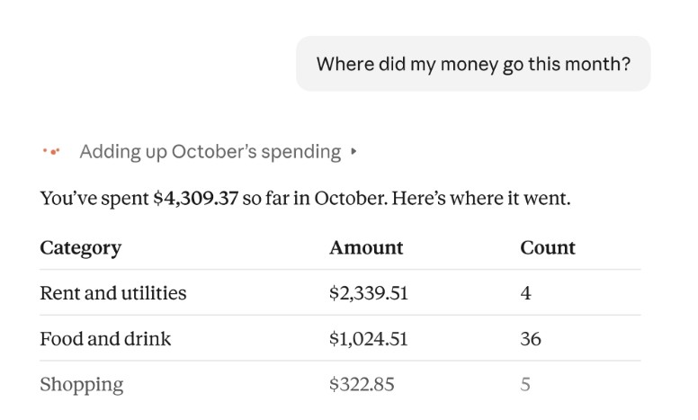
Anthropic官方财务问答示例；演示数字不是本刊真实账户 ↗ 原始图证美国Pro、Max、Ultra用户开始分批获得Personal Finance测试版，可在Claude里查看自己选择的银行与卡片资料。
经Plaid授权只读访问后，用自然语言追问支出、账单和重复扣款，再生成可调整的图表或账单日历。
省掉逐个银行应用找数字再手工合并的步骤；没有转账、投资或代管资金能力。
余额可能延迟一两天；连不上或漏连的账户会让汇总不完整。财务专区不用于训练，普通对话沿用个人设置。
产品判断
取消连接不等于删掉既有聊天或已分享图表。数字有疑问时应回看交易依据，不能把整齐的仪表盘当银行实时余额。测试覆盖网页、桌面与手机，实际是否可见仍随账号分批开放。
AI PRODUCT DAILY / 2026-11-06消费硬件／预购 · 2026-11-05 · 近三日 / 边界见深读
Aina把代理下一步放到戒指屏幕，用拇指确认
 Aina官方戒指结构图，展示屏幕、电路板与外壳；非独立拆机 ↗ 原始图证
Aina官方戒指结构图，展示屏幕、电路板与外壳；非独立拆机 ↗ 原始图证Aina面向常在iPhone与Mac之间处理提醒、会议和代理任务的人，把下一步操作放进带OLED屏幕的戒指。
用户看见建议后向上划动批准，也可按住按钮说话；戒指显示完成反馈，忽略建议则不执行。
七种手势可遥控音乐、接电话或操作Mac应用，省去只为确认而拿出手机的步骤。
目前预购起价399美元、标价499美元，官方预计2027年初发货；仅支持iPhone与Mac，不是已交付设备。
产品判断
小屏需清楚说明批准对象；本机学习不等于所有AI请求都不外发，实际误触和续航尚未实测。预购会先寄尺寸套件，套件寄出后不能取消，购买前需把这一节点与设备退货条款分开看。
AI PRODUCT DAILY / 2026-11-06消费耳机／官方发布 · 2026-11-05T13:00:00Z · 窗口内观察
Moto Buds Ultra 27把翻译和点头接听放到耳边，仍依赖配套手机
 Motorola官方耳机与充电盒产品图 ↗ 原始图证
Motorola官方耳机与充电盒产品图 ↗ 原始图证Moto Buds Ultra 27面向通话、听音和跨语言交流，耳机增加语音拾取单元，配合麦克风处理用户声音。
用户可点头或摇头接拒来电，长按左耳触发Qira，翻译功能通过兼容Motorola手机的内置应用工作。
它减少拿手机操作的步骤，但不能当作独立翻译器；语言、地区、账户及网络条件仍影响功能。
全球起价199欧元，分市场陆续推出；美国日期与价格未定，Hey Qira语音唤醒仍是后续计划。
产品判断
嘈杂环境的识别与翻译要分开测试，麦克风更多并不直接证明译文更准。首次配对后仍应逐项确认翻译与助手入口，不能把耳机能播放声音当成所有智能功能已开通。
AI PRODUCT DAILY / 2026-11-06智能手机／正式发布 · 2026-11-05T14:00:00Z · 窗口内观察
Signature 27用独立动作传感器辅助抓拍，代理功能分批到来
Motorola官方Signature 27产品照片；非本次相机实测样片 ↗ 原始图证Motorola Signature 27给运动抓拍增加独立EVS传感器，读取像素亮度变化，配合Action Shot处理快速移动的对象。
它补充主相机的输入，不能把动作信息当成另一张完整照片，也不等于保证每次都拍清。
本次公布美国1599.99美元价格、11月19日预购和26日开售，是九月亮相后的具体上市增量。
Gemini多步骤操作、语音整理和手语转文字列入未来数月逐步推出，地区、语言与账户条件仍适用。
产品判断
选购应分别看抓拍成功样片与当下软件功能，不把传感器规格和未来演示合成现货体验。运动信息需要与成像处理一起形成结果，适合用相同光线下的连续尝试比较，不能只看精选成功样片。
AI PRODUCT DAILY / 2026-11-06智能眼镜／预购日期更新 · 2026-11-05 · 近三日 / 边界见深读
Warby Parker把智能眼镜预购定在11月12日，先到店试清控制方式
Warby Parker官方已展示的两款智能眼镜；本次新增是预购日期 ↗ 原始图证Warby Parker确认首个Intelligent Eyewear系列11月12日开放预购，预计假日季交付；这是已有产品的上市时间增量。
官方展示用语音询问周围事物、听翻译与导航、拍摄及播放音频，眼镜把视听输入接到Gemini。
门店演示入口提供控制、语音与实际场景试戴，用户可以先检查佩戴和操作，而不是只看发布视频。
价格、精确发货日与完整地区资格尚未核实，部分功能有设置、订阅或年龄限制，不能视为立即有货。
产品判断
试戴应看是否听清、拍对与知道何时记录；预约或预购数量都不能证明持续使用。配镜选项与当前手机兼容性也影响最终体验，不能把普通镜架的起价当成智能眼镜的价格。
AI PRODUCT DAILY / 2026-11-06软硬结合／行业无人机 · 2026-11-05 · 近三日 / 边界见深读
Matrice 5T用雷达和热成像辅助巡检，机载AI接上目标搜索与航线
大疆Matrice 5T官方发布图；厂商提供，非本刊实拍 ↗ 原始图证Matrice 5T面向夜间搜救、线路与设施巡检，把激光雷达、毫米波雷达、低光视觉和原生1K热成像装进同一无人机。
操作者划定作业区域、配置拍摄等动作；连接FlightHub 2后，可用文字或图片在Pilot 2中搜索目标，再复核图像和异常。
这是十一月五日发布的5T，不是此前机库配套5TD；公告只有日期，按近三日补充保留边界。
毫米波与跨地区使用有限制，五十九分钟是无载测试值；AI识别不能代替现场确认或飞行员判断。
产品判断
采购时核对当地配置、软件与实际任务续航，报价和独立飞行效果尚未核实。还要确认结果能对应设备位置与维修记录，避免只多出一批待整理照片。
AI PRODUCT DAILY / 2026-11-06论文／研究原型 · 2026-11-05T18:36:18Z · 窗口内观察
Souffleur把语音聊天收成主题卡，短对话里尚未比逐字稿更好接续
 作者比较图：线性聊天与主题卡片视图。 ↗ 原始图证
作者比较图：线性聊天与主题卡片视图。 ↗ 原始图证手机语音聊天用户可以在Souffleur查看当前话题、已作决定和未完事项，不必从不断增长的逐字稿里找位置。
说话时底部保留当前识别文字；早先话题逐步折成小卡，点开再看具体对话。
同一话题位置尽量稳定，回到旧话题时留下空位；颜色区分人与代理的贡献，便于检查一句结论是谁提出。
压缩摘要仍可能误解或省略，最近原话不能被短标签完全取代。
产品判断
四十八人短期实验未检出跟随、恢复、注意与回忆优势，也没有验证边走边用。它仍是研究原型，商业部署和价格未知。适合评估语音助手在多话题之间的视觉提示，而非自动执行任务。
AI PRODUCT DAILY / 2026-11-06论文／研究原型 · 2026-11-05T11:30:27Z · 窗口内观察
Tasteply让信息流的兴趣配比可拖动，临时好奇不必改成永久偏好
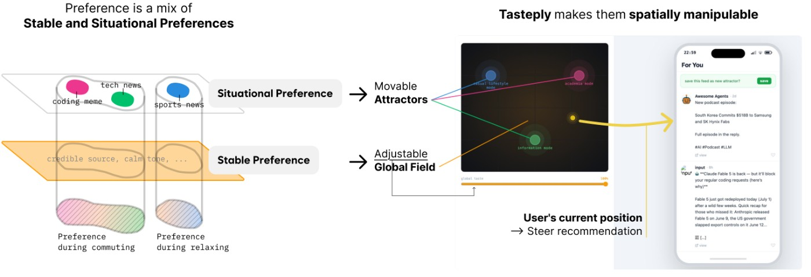
作者原型图：可拖动偏好场与对应信息流。 ↗ 原始图证Tasteply让信息流用户把不同情境的兴趣放到二维地图上，用光标位置混合当前想看的内容。
系统从点赞内容提出兴趣分组，用户审查、调整，再移动到不同吸引点附近查看推荐。
局部兴趣权重随距离变化，全局偏好强度另设控制；一次浏览可以偏离平日口味，而不用改写整个个人画像。
这里的按情境学习新点赞仍是后续设想，不能写成已完成的记忆隔离。
产品判断
五位HCI研究者的探索访谈喜欢随手混合，但精确任务常更偏好单一兴趣点。它未证明推荐更准或长期满意度提高。当前演示面向信息流浏览，不是已经普遍部署的社交平台功能。
AI PRODUCT DAILY / 2026-11-06论文／研究原型 · 2026-11-05T16:03:41Z · 窗口内观察
IntentWeaver把写作意图放到文字旁，改语气时能看见目标冲突
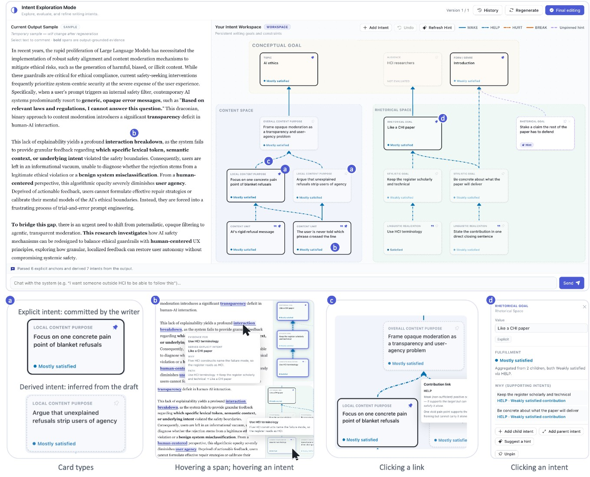
作者界面：写作目标、正文与目标关系检查器。 ↗ 原始图证IntentWeaver面向反复修改AI草稿的写作者，把受众、内容和语气整理成可检查的意图结构。
用户添加、编辑或固定意图，查看对应文字和冲突，再明确重新生成；推断出的目标不会自动变成已认可要求。
它减少反复补充长提示的需要，也让一句局部修改对上层目的的影响有位置可看。
明确目标冲突时暂停生成；最终编辑模式才开放直接改文，历史版本可恢复。
产品判断
二十四人短文研究报告更频繁回看高层目标，不能证明长文长期收益。结构本身也需要维护，错误推断仍应由作者判断。适合受众和立场经常调整的草稿，快速回复未必需要这层结构。
AI PRODUCT DAILY / 2026-11-06论文／研究原型 · 2026-11-05T10:32:51Z · 窗口内观察
MAIKE先追问论点再让学生改文，聊天更深入尚未带来明确作文优势
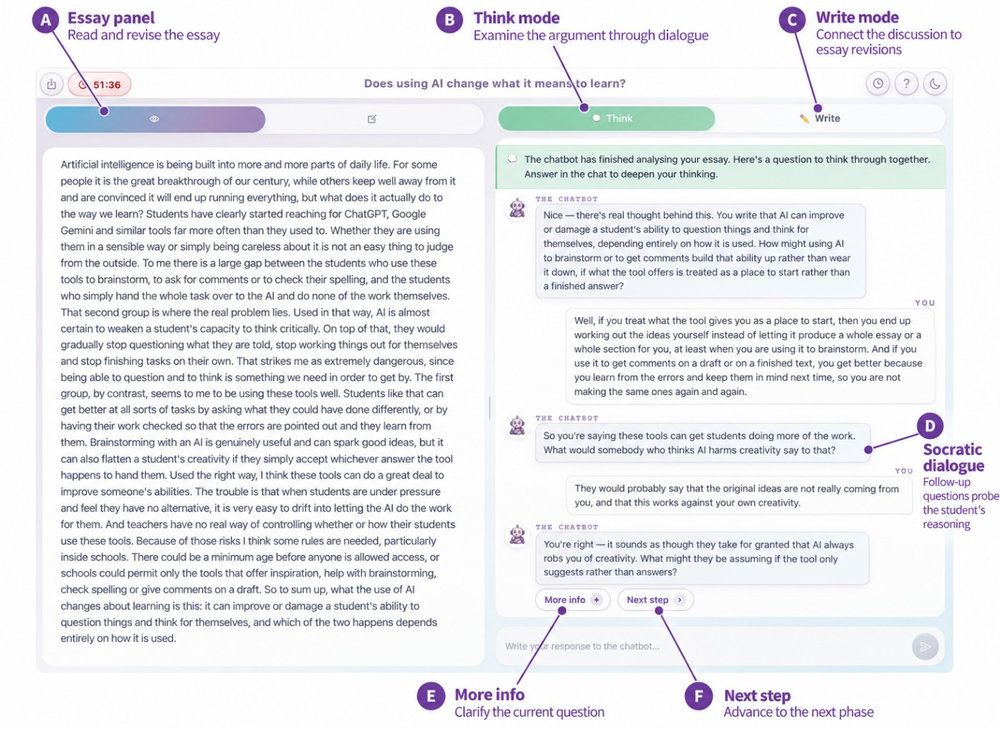
作者界面：文章旁的Think对话与Write模式。 ↗ 原始图证MAIKE把学生短文放在编辑器旁，先针对论点提问，再帮助计划修改，由学生自己写出新版本。
内部诊断生成候选问题并选择重点，Think模式追问理由，Write模式讨论怎样落到文章，重交后再比较改动。
它不直接提供作文句子，也不把内部诊断当成绩展示；学生可随时编辑或重新提交。
错误诊断仍会引导错误问题，当前界面不能保证学生看出误判。
产品判断
六十五人探索研究显示讨论方式有差异，但没有明确的作文质量优势；不能把约四成学生整体进步改写成系统提升四成。适合检查课堂辅导过程，尚不能据此承诺持久学习或减少依赖。
AI PRODUCT DAILY / 2026-11-06论文／研究原型 · 2026-11-05T10:39:26Z · 窗口内观察
VocabulARy 2.0把身边物件变成立体助记，生成等待仍打断学习
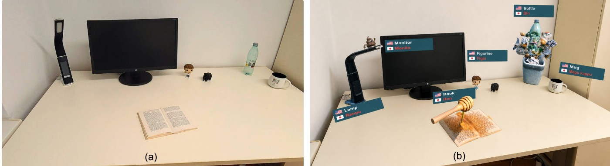
作者的现实工作区与AR助记场景对照；右图经过少量编辑以改善文字可读性，并非编辑实测。 ↗ 原始图证VocabulARy 2.0让学习者扫描身边物件，从双语卡片选词，输入个人联想，再生成可放回现实场景的三维助记物。
Quest 3负责取景与摆放，服务器把照片和文字交给图像生成、对象核验及三维生成流程，返回可缩放的模型。
相较预先制作素材，个人物件和联想可以临时进入练习；目前描述仍靠虚拟键盘输入。
产品判断
作者报告每个助记物平均生成约一分五十五秒，三个以上同时显示还有渲染问题。学习收益、认知负担和商业访问尚未验证。这是AR学习研究演示，不能用演示素材替代即时生成效果。
AI PRODUCT DAILY / 2026-11-06大学研究报道／可穿戴原型 · 2026-11-04 · 近三日 / 边界见深读
ProtoCall在伸手拿错之前轻拉手臂，训练仍要看脱离辅助后的表现
 大学报道中的ProtoCall可穿戴研究原型；非商业设备 ↗ 原始图证
大学报道中的ProtoCall可穿戴研究原型；非商业设备 ↗ 原始图证ProtoCall面向顺序技能训练，把眼动眼镜、腕部追踪和头胸部执行器连到便携计算机。
系统判断用户看错或伸向错误对象后，通过拉索提示转头或收回手臂，输入是视线与动作，输出是身体反馈。
大学11月4日报道UIST研究及现场演示，小样本任务比较不同反馈形式；不是已上市培训设备。
头部提示提供方向信息，腕部提示更像制止，学习效果与控制感需要一起衡量。
产品判断
完整论文访问受限，现有依据是原始大学报道与作者项目列表，不能外推临床或工厂安全效果。采用方向是帮助人学会步骤，不能只看戴着设备时少犯错，还应看移除辅助后能否独立完成。
AI PRODUCT DAILY / 2026-11-06论文／研究原型 · 2026-11-05T02:34:14Z · 近三日 / 边界见深读
Slide to Report让VR不适分项滑动上报，测量训练比多装两个滑块更关键
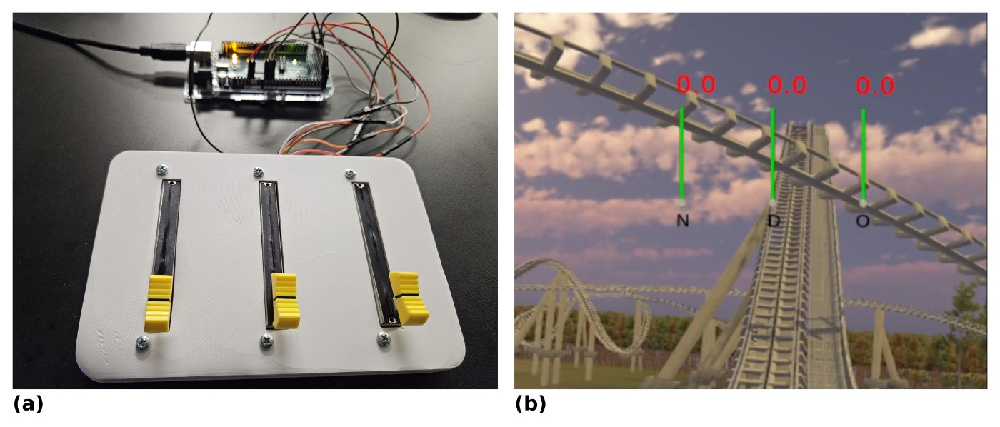
作者装置照片：三条实体滑块与VR内的症状数值。 ↗ 原始图证Slide to Report用桌面实体滑块记录VR里的恶心、失向和眼部不适，用户不用每次退出场景填写问卷。
线性电位器把手动位置送进虚拟条形反馈，研究同时记录眼动、心电和皮肤信号。
分项记录能保留症状变化，但这些传感器并未自动替用户判断不适；也不是治疗或诊断产品。
正文明确单滑块对照只报眼部不适，与摘要“整体不适”的表述存在差异，比较须按方法解释。
产品判断
五十二人实验未检出负担差异，不等于没有成本；参与者还接受了十分钟训练。跨任务和长期使用效果仍待验证。这是体验测量研究，适用的是实验设计而非消费医疗判断。
AI PRODUCT DAILY / 2026-11-06论文／研究原型 · 2026-11-05T17:18:13Z · 窗口内观察
ControlAnything现场生成设备控制面板，但连通确认还不是动作成功
 作者AR原型：OP-1设备上的虚拟截止频率与共振控件。 ↗ 原始图证
作者AR原型：OP-1设备上的虚拟截止频率与共振控件。 ↗ 原始图证ControlAnything让Quest 3佩戴者选中附近设备，说出希望用手控制的参数，再生成对应AR控件。
分割模型框出对象，笔记本上的编程代理编写连接程序，经预先写好的MIDI、蓝牙或按键通道测试。
手部映射随后逐帧运行，不必每帧再问模型；合成器、云台和电脑操作属于作者已准备的目标范围。
用户能用手势停止，输出有限幅，但连接程序本身没有沙箱。
产品判断
作者单人十次请求中九次进入就绪态，剩下一次主动停止；这只证明传输被接收，未独立验证物理效果，不能推及任意设备。适合研究临时设备交互的团队，首次使用者的学习和恢复成本仍需检查。
AI PRODUCT DAILY / 2026-11-06论文／研究原型 · 2026-11-05T00:46:43Z · 近三日 / 边界见深读
VREgo用消费头显采机器人示范，手抓得成不代表夹爪照做也成
 作者图示：头显采集、虚拟夹爪处理与仿真机器人。 ↗ 原始图证
作者图示：头显采集、虚拟夹爪处理与仿真机器人。 ↗ 原始图证VREgo用PICO 4 Ultra记录第一视角画面与手部轨迹，研究如何把人的桌面操作转为机器人训练材料。
立体相机和手部跟踪支持现场采集，处理流程去掉手臂、渲染虚拟夹爪，再把轨迹送入模拟任务。
它减少专门采集设备的门槛，但人体动作、抓取时机与夹爪几何仍需校正。
两步堆叠的高成功数字加入了任务专用执行规则，并在开发布局上测得，不能当作泛化表现。
产品判断
目前只有一名操作者、两个任务和模拟验证，没有真实机器人部署证据。消费头显采到数据只是训练链条的起点。适合机器人学习团队排查数据转换错误，尚非开箱即用的教学工具。
AI PRODUCT DAILY / 2026-11-06论文／研究原型 · 2026-11-02T18:59:32Z · 本周回看
Pixel把示范工具与机器人一起设计，动作数据少一次硬拼适配
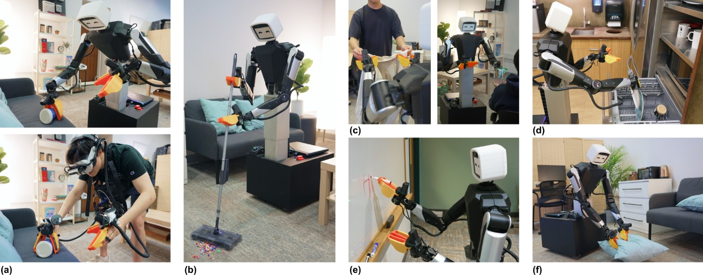
作者照片：Pixel实体机器人、遥操作装置与家居任务。 ↗ 原始图证Pixel是面向机器人学习团队的轮式双臂平台，把机身、示范采集、全身控制和训练接成同一套系统。
用户可用主从臂、VR或穿戴式夹具采动作，头部与手部视角进入训练；语言条件策略再输出协调移动和抓取。
人体与机器人共享相近的相机视角、夹具和动作表示，减少分开搭建后再硬接的适配。
轮子不能上楼，简单夹爪没有完整人手能力，未记录的身体接触也不会自动进入数据。
产品判断
作者称硬件低于一万五千美元，但不是零售报价；项目页仍写代码即将公开。长任务规划尚未系统验证，本项为一周回看。完整部署成本和复现表现仍需采用者按自己的任务确认。
AI PRODUCT DAILY / 2026-11-06论文／研究原型 · 2026-11-02T23:47:53Z · 本周回看
MABEL把头手动作接到双臂全身控制，八千美元只是零件小计
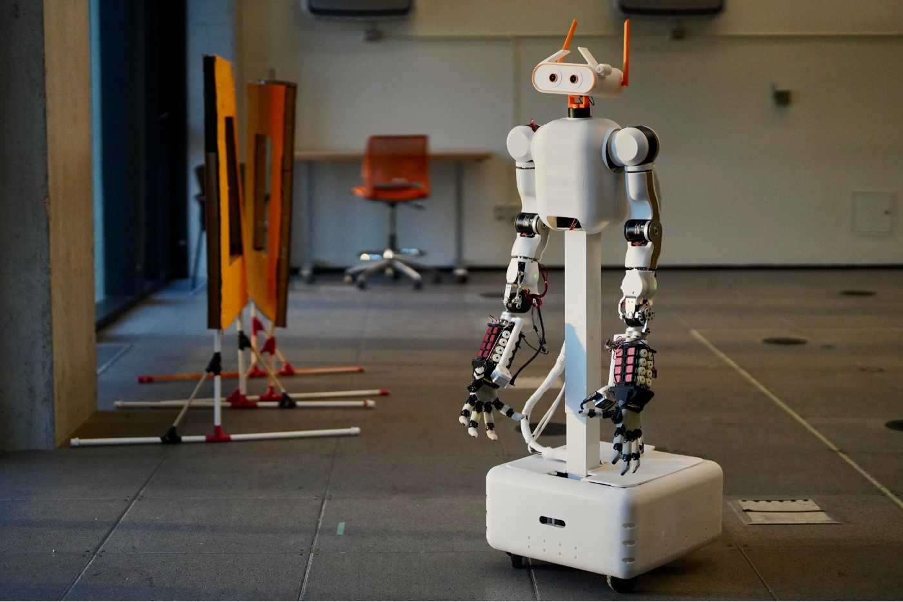
作者照片：MABEL双臂、灵巧手与移动底盘。 ↗ 原始图证MABEL把双臂、灵巧手、升降躯干和轮式底盘接成研究平台，用头显中的头手动作遥操作并采集示范。
立体头部相机与腕部相机提供观察，Vision Pro视角回传让操作者查看动作，统一控制接口再接模拟与策略训练。
无需手持控制器不等于无需校准；狭小操作空间还可以切换屏幕摇杆控制底盘和升降。
八千零五十六美元是Pi 5配置零件小计，排除可选传感器，不能当作完整采购或交付价。
产品判断
作者的自主抓放十次成功八次，主要验证上半身学习流程，不证明移动家务已可靠完成；本项列为一周回看。完整部署成本和复现表现仍需采用者按自己的任务确认。
AI PRODUCT DAILY / 2026-11-06机器人基础服务／官方发布 · 2026-11-05 · 近三日 / 边界见深读
Serve把车队连接和稀有片段筛选开放给其他机器人团队
 Serve官方照片：车队地图、活跃机器人与监控界面。 ↗ 原始图证
Serve官方照片：车队地图、活跃机器人与监控界面。 ↗ 原始图证Serve新服务面向已有机器人的团队，把现场连接、训练片段筛选与数据目录作为独立产品提供。
Serve Link连接现场机器与模型、监控和训练系统，Data Curator从车队记录中找出值得处理的稀有情境。
Bedrock是首批客户，用多种网络连接施工设备；本次增量是对外服务，不是推出新机器人。
接口、价格、延迟保证、离线恢复与数据授权细节仍需核对，街道人行道数据不自动适用工地。
产品判断
试点应同时量连接中断后的恢复与筛选片段的有效率，不能只看上传速度。采购时还要检查选中的罕见片段能否解释、能否被人工修正，以及接入后仍需保留哪些复核工作。
AI PRODUCT DAILY / 2026-11-06产品更新／Product Hunt发布页 · 2026-11-05 · 近三日 / 边界见深读
Bridge让代理带着权限加入会议，纪要之外还要管住现场动作
Bridge提供的会议界面宣传图，展示人与代理身份及侧栏。 ↗ 原始图证需要在会前找资料、会中核对、会后跟进的团队，可把这些任务放进同一会议工作区。
Bridge让用户设置代理身份、权限和触发规则；代理可以进会看共享屏幕、听说或后台处理，再通过连接工具行动。
十一月五日PH页面的新增重点是允许定制代理参与的视频会议，原有Simplora纪要能力并非新发明。
免费版五人、每次六十分钟；定制代理属于付费计划，Professional页面标每用户每月20美元。
产品判断
会中表达未必是执行命令，应核对触发、工具范围和结果。公开演示不能证明减少会后工作，录音同意与错误恢复仍需实测。历史纪要可导入，但共享记忆中的旧结论也需要在会议纠正后同步检查。
AI PRODUCT DAILY / 2026-11-06官方版本更新／Product Hunt发现 · 2026-11-04 · 近三日 / 边界见深读
Pushary把代理问题送给指定同事，手机批准与审计都有边界
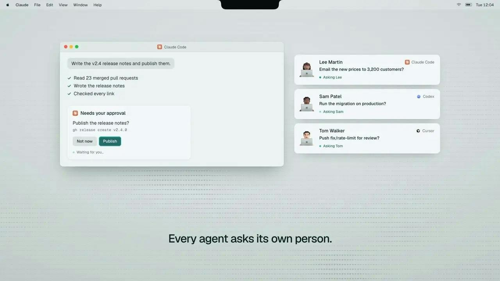
Pushary提供的审批界面示例，按成员分配代理提问。 ↗ 原始图证多名同事各自运行代码代理时，Pushary让问题先找到任务主人，特定工具步骤再转给负责人。
管理员按工具和仓库设规则；手机或面板答复后继续，活动页保留会话、操作与答复身份。
团队功能十月二十九日已发布，十一月四日版本继续调整，五日PH上榜不是首次上线。
手机能拒绝高风险步骤，批准要到面板或代理原提示；原提示答复不记名，通用MCP也不能强制拦截。
产品判断
当前团队计划五人每月59美元，额外每人12美元。应核验超时、身份和未接入路径，别把通知记录当完整执行证明。离开电脑前仍需让代理运行主机保持在线，并确认每位成员已配对自己的设备。
AI PRODUCT DAILY / 2026-11-06官方产品预告／分阶段可用 · 2026-11-05 · 近三日 / 边界见深读
Box Architect准备把业务目标组装成流程，测试版与现成功能要分开看
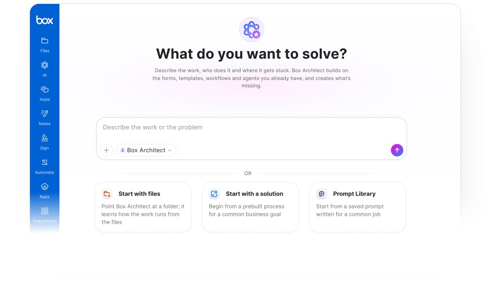
Box官方Architect预览图；产品仍为待推出测试版。 ↗ 原始图证业务负责人把目标和Box里的程序文件交给Architect，系统计划生成步骤、审批和所需应用组件。
例如收取申请、抽取字段、追补缺件、人工判断，再生成签署文件和进度界面，省去逐个连接产品。
十一月五日预告，Enterprise Advanced测试版计划第四季度开始，产品页仍写即将推出。
部署前可用真实材料和边界案例预览，优化建议仍由负责人决定；已有权限不保证每次判断正确。
产品判断
Context Retrieval计划明年初提供，不能与已可用的模型及代理安全控制混为一谈。先核查例外处理、回退和总成本，完整报价与实际效果尚未验证。收件、抽取、审批与签署应保留各自状态，避免一段完成总结遮住遗漏步骤。
AI PRODUCT DAILY / 2026-11-06官方企业产品更新 · 2026-11-05 · 近三日 / 边界见深读
Claude把配置检查与运行拦截放在一起，默认放行仍要管理员看清
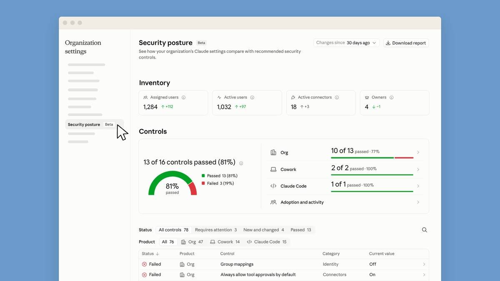
Anthropic提供的安全配置检查界面；非本刊实测。 ↗ 原始图证管理Claude企业部署的安全团队可集中查看配置，并让既有安全服务检查请求。
安全中心列出现值、建议和修改入口；推理钩子把对话及工具调用送去判定，再允许或阻止执行。
十一月五日公告中，推理钩子正式可用，安全中心和集中管理仍属测试版。
影子模式只观察；首次保存默认超时五秒后放行，抽样之外也不检查。原始图像字节不送检。
产品判断
先用已知样例核查拒绝、超时和恢复。登录会话注销不等于撤销API密钥，配置报告也不是合规认证。界面还应同时显示检查比例、故障策略及未覆盖入口，免得绿色状态掩盖未经检查的请求。
AI PRODUCT DAILY / 2026-11-06产品更新／问卷分析 · 2026-11-02 · 本周回看
Google Forms把多题回答一起分析，建议仍要回到样本核对
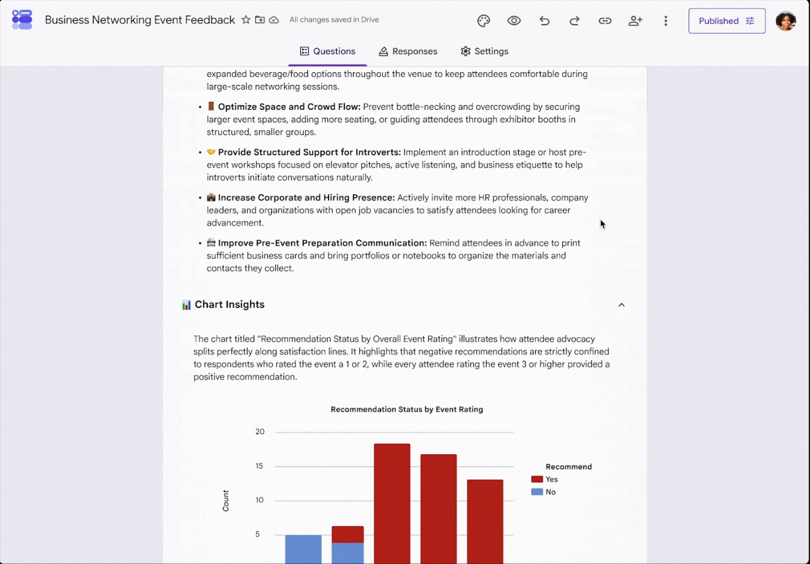
Google原始演示动画截图：Forms中的建议与图表分析；示例数据，非本刊实测。 ↗ 原始图证Actionable Insights适合整理活动反馈、产品问卷和报名数据的Google Forms用户。
在Responses里生成洞察，Gemini计算回答中的数量、比例与跨题关系，再给出重点及建议；Analysis steps可展开查看。
本次新增是整份表单分析，不只是逐题概括文字。快速发布域从十一月二日逐步开放，本条为一周回看。计划发布域十九日开始，并非所有账号已开放。
至少需要十二份回答和三道题，不支持测验；关联表格无访问权限时也不能使用，实际入口受计划和批次影响。
产品判断
相关性不是原因，先核分母、缺答和原始记录，再决定是否采取建议。可重试生成，但重试不能补齐访问权或修复有偏样本。
AI PRODUCT DAILY / 2026-11-06开发工具／官方发布与文档 · 2026-11-06T01:40:00Z · 窗口内观察
Codex保留换提供方后的旧会话，失败时先读记录再准备续写
 依据官方CLI发布与实现记录绘制的恢复流程，非产品截图；未运行该版本。 ↗ 原始图证
依据官方CLI发布与实现记录绘制的恢复流程，非产品截图；未运行该版本。 ↗ 原始图证Codex CLI 0.167.0面向在终端并行处理代码任务的开发者，补齐会话切换、附件核对与批准前检查。
切换模型提供方后仍能找到旧聊天；无法继续时以只读方式打开，选择续写会准备可编辑且尚未发送的提示。
本次稳定版还加入无守护进程的代理中心，并在支持的终端显示本地图像缩略图，便于发出要求前核对素材。
只读恢复不是原执行状态迁移；缩略图受终端支持与空间限制，旧记录也可能包含已失效的项目假设。
产品判断
检查草稿是否保留、续写是否需明确发送，比仅统计切换次数更能验证恢复体验。升级前还应检查多个并行任务的未读结果和中断草稿，避免恢复时误送过期要求。
AI PRODUCT DAILY / 2026-11-06开发工具／官方发布与文档 · 2026-11-05T10:28:09Z · 窗口内观察
Wuu把代码差异放进可伸缩审阅区，连接失败不用重做已完成授权
 Wuu官方工作区截图；非本期实际操作 ↗ 原始图证
Wuu官方工作区截图；非本期实际操作 ↗ 原始图证Wuu把聊天、文件、终端、浏览器与代码差异放在同一macOS工作区，适合直接处理本地项目的开发者。
用户给出文件夹和任务，代理修改文件；Review区域按宽度选择并排或统一差异，保留语法颜色与行选择。
十一月五日版改用虚拟化差异组件，并在授权完成但MCP连接失败时保留授权，供重试或明确清理。
桌面预览目前面向Apple Silicon；模型调用仍遵循所选提供方的数据路径，本地记录不等于全程离线。
产品判断
审阅大修改和恢复连接是具体收益，仍需检查批准、文件边界与失败后的实际状态。适合已有明确验收流程的个人与小团队；界面整合不能替代代码测试和人工接受修改。
AI PRODUCT DAILY / 2026-11-06开发工具／官方发布与文档 · 2026-11-05 · 近三日 / 边界见深读
PDD Kit先问清登录规则，再证明代码满足哪一部分
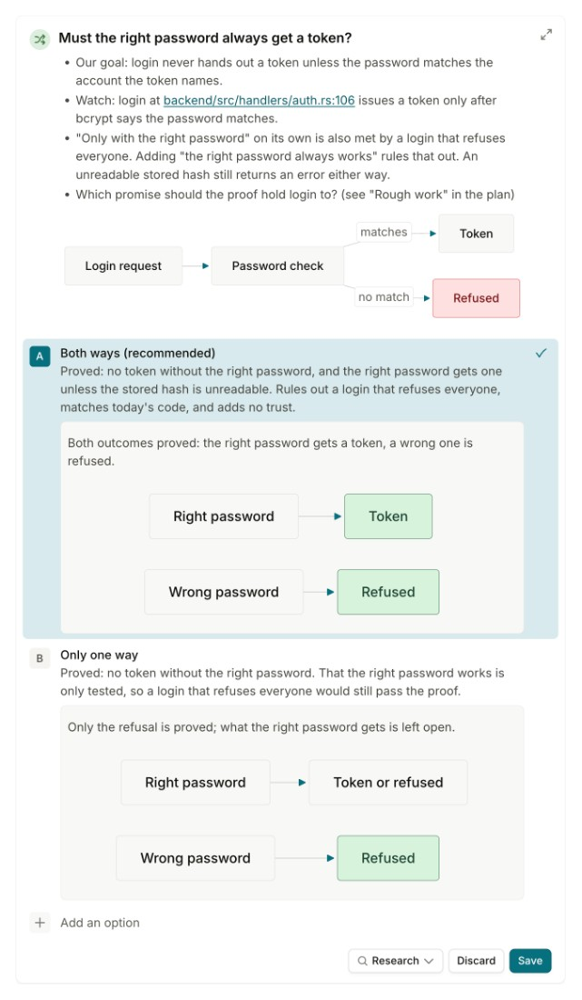
微软研究公布的登录规则决策卡；研究演示界面 ↗ 原始图证PDD Kit是微软研究展示的开发工具，把自然语言要求整理成可审查意图，再生成Verus规格、证明及测试。
示例要求只有密码正确才发令牌，系统先追问正确密码是否必须成功，避免“拒绝所有人”也满足原句。
团队在Chopin中批准规格与信任边界，机器检查登录核心；外部库、数据库等假设仍以单独测试支撑。
这是全栈应用中的登录验证演示，不能改写为整个应用没有缺陷，也不保证查询终止、性能或未写入规格的要求。
产品判断
采用时先挑小而重要的规则，检查错误规格能否被人发现，再谈减少逐行审阅。作者的示例不等于本期完成复现；一般可用性、费用和长期维护成本仍待核实。
AI PRODUCT DAILY / 2026-11-06开发工具／官方发布与文档 · 2026-11-04 · 近三日 / 边界见深读
Langfuse给团队分发网关密钥，费用看板仍有明确统计边界
 Langfuse官方网关用量分析界面 ↗ 原始图证
Langfuse官方网关用量分析界面 ↗ 原始图证Langfuse AI Gateway公测面向管理模型调用的团队，用个人或服务账户密钥替代到处分发提供方密钥。
管理员配置提供方、允许模型和记录项目，应用更换地址与密钥；请求被转发，并按用户、密钥和模型归集使用量。
当前支持OpenAI与Anthropic原生接口，记录可选完整内容或仅用量，网关密钥不能访问其他Langfuse数据。
模型费用与观察记录费用分开；Codex失败或取消调用的估算费用存在已知偏差，长历史也可能超出记录上限。
产品判断
适合追踪谁调用了什么，不应把看板总额直接当成完整账单或每次任务的可靠成本。直接调用提供方的流量不会出现在网关图表里，接入范围必须单独核对。
AI PRODUCT DAILY / 2026-11-06开源模型／开发工具 · 2026-11-04 · 近三日 / 边界见深读
MNN-Pocket把短文本任务留在手机，生成回答与选择候选各有入口
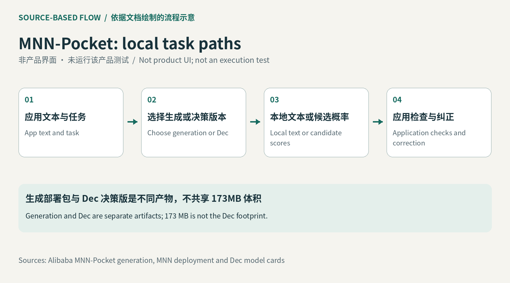
依据原始文档绘制的流程示意，非产品截图；未运行该产品。 ↗ 原始图证MNN-Pocket面向手机应用开发者，把中英文指令、信息提取等小任务放到本机运行。
应用提供文本或候选项，经本地模型输出回答；Dec版本直接返回候选选择与概率，不必先生成一段解释再解析。
官方仓库把发布标为十一月四日，本条是近三日补充。约三亿参数的INT4部署包为173MB，代码与模型采用Apache 2.0。
部署包大小不等于运行内存；后端、上下文与机型都会影响速度。决策版也不能套用同一体积。它仍需接入应用、管理模型下载和版本更新，不能当作安装即用的业务成品。
产品判断
先用真实短任务核对误选和纠正成本，再决定哪些请求可不走云端。
AI PRODUCT DAILY / 2026-11-06开发工具／官方发布与文档 · 2026-11-05 · 近三日 / 边界见深读
Tinker统一异步返回值，训练脚本迁移要分清提交与等待
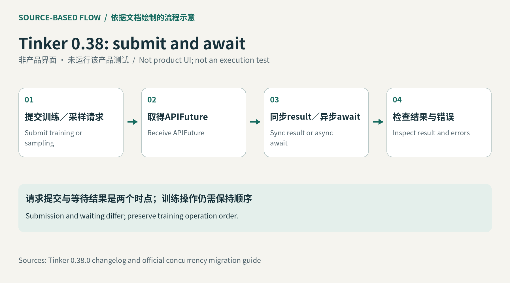
依据官方迁移文档绘制的调用流程示意，非产品截图；未运行训练。 ↗ 原始图证Tinker SDK 0.38.0面向编写训练和采样脚本的开发者，把多种返回类型统一为APIFuture。
异步代码await，同步代码取result；需要Python标准并发对象时显式转换，创建训练或采样客户端也要等待。
旧_async方法暂时兼容但会警告，未来移除；这不是新模型或算力发布，而是影响既有脚本的接口迁移。
文档强调采样调用立即提交，协程转换只改变等待方式；训练流水线要先按顺序提交，再等结果。
产品判断
迁移检查应看请求次数、操作顺序和恢复行为，不能把接口统一直接写成训练提速。本次仅核对官方迁移说明与包元数据，没有运行训练；兼容警告应列入升级计划，远端服务费用仍另算。
AI PRODUCT DAILY / 2026-11-06官方模型发布／系统卡 · 2026-11-05 · 近三日 / 边界见深读
GPT-6 Cyber让安全研究接着验证和修复，授权范围仍需逐次落实
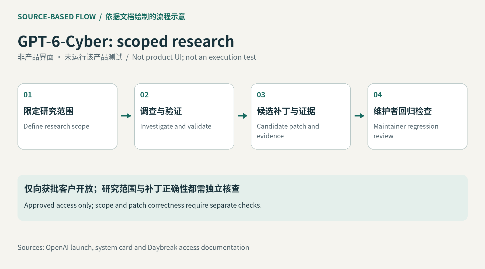
依据原始文档绘制的流程示意，非产品截图；未运行该产品。 ↗ 原始图证GPT-6 Cyber面向已获批准的安全研究人员，处理代码线索、验证发现并提出候选修复。
团队指定允许检查的目标与动作，代理持续调查，再把证据、复现条件和补丁交给维护者判断。
这是十一月五日单独发布的专用模型，不是前一期政府云区域扩展。当前仅限获额外批准的Daybreak Red客户。
批准模型、开启项目与具体任务授权是不同步骤；基准中的少越界不能保证所有真实任务都守界，费率未核实。
产品判断
试用应同时检查问题能否复现、补丁是否通过回归，以及被排除的目标是否真的没有访问。